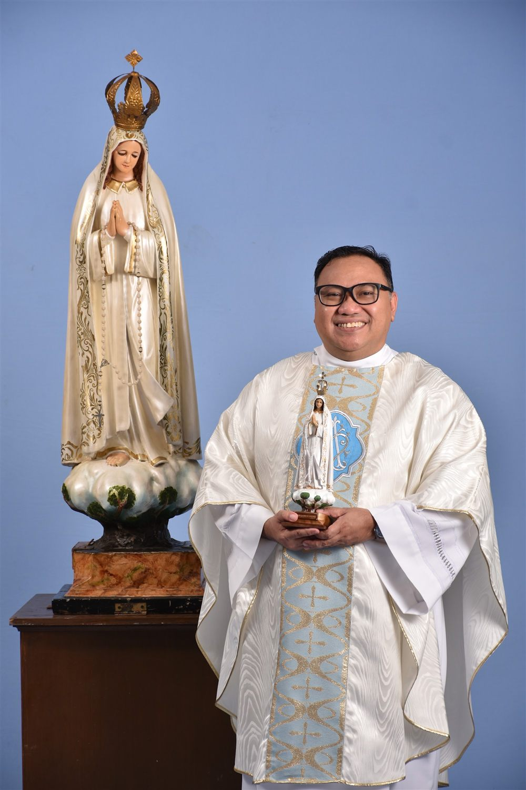

Parish Priest · Since 2021
Rev. Fr. Fredrick Edward “Jojo” C. Simon
Our Lady of Fatima Parish, Diocese of Cubao
Under Fr. Jojo’s leadership since 2021, the parish continues to grow in faith and service — from the post-pandemic Adoration Chapel where parishioners keep vigil throughout the day, to the community outreach that carries Our Lady’s message of love beyond the church walls.